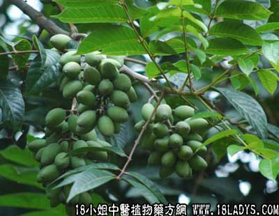

白榄根(中药材植物名:白榄)(植物科目:橄榄科)

白榄根（橄榄科）
别名：橄榄。
生长环境：本品为常绿乔木。多栽种于村庄附近土地或空地上，能耐干旱。
分布：我国南部地区，广东省各地均有种植，云南有野生的。此外亚洲地区亦有分布。
入药部分：根。
采集期：全年采根、秋、冬采果。
自采地点：家种。
性味：性平、味淡。
功能：除痰湿、行气、解郁。
主治、用量和用法：1、伤风咳，配伍用；2、喉痛：用干根5钱至1两，清水煎服；3、胃痛：用干根1至2两，清水煎服；4、脚气：用干根2两、猪脚筋适量，清水煎服。
验方（治伤风咳方）：白榄根1两、东风桔5钱、芒果核5钱、木槵根5钱、清水四碗，煎成一碗，热服。
（方解）本方白榄根除痰，东风桔止咳化气，芒果核、木槵根疏风消滞。合为止咳除痰疏风消滞之剂，清伤风食滞有效。
（方歌）伤风咳嗽喉咙痒，白榄木槵两用蔃，芒果核与东风桔，疏风止咳消滞强。
参考资料：《广东省中医验方交流汇编》治生油蛛方：生白榄数枚、去核、擂烂，将汁擦肾囊。
《保定协会中医实用药方》介绍治鸡骨鱼刺梗阻咽喉方：橄榄核1两（焙焦研细）、梅片5分，合研，每次用1分，吹患处。
《上海验方选编第一辑》介绍治肠燥便血验方：橄榄仁、鸡蛋及麻油少许，同填入猪肠内，两头扎紧，饭锅上蒸热切食之。
《湖南省中医单方验方第一辑》湘乡县中医介绍治冻疮溃烂方：用生橄榄数颗，冰片适量。用法：取核，放火内烧，候有烟冒出后，将它取出，加冰片同研末，先洗净患处，将药末敷上。慈利县中医介绍治小儿鹅口疮方：用橄榄子一粒，用蜜糖磨擦搽。